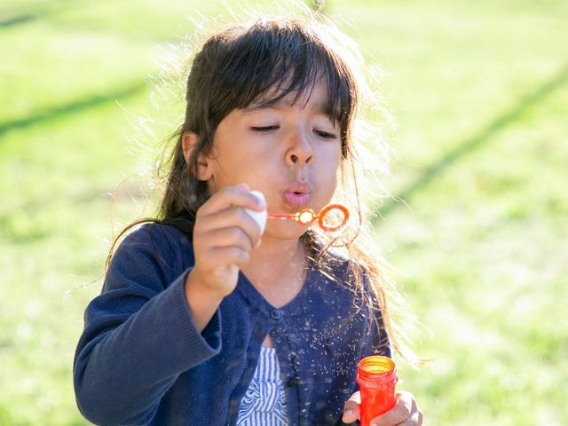
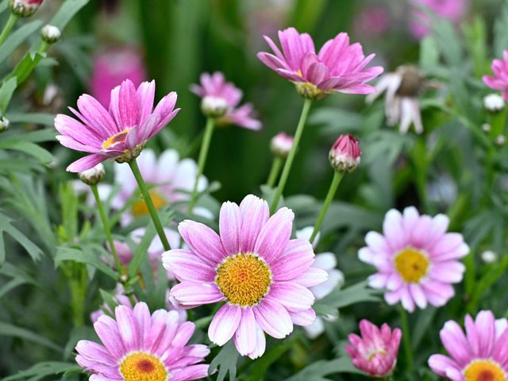
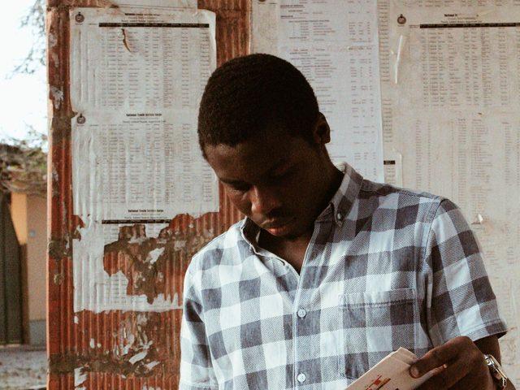
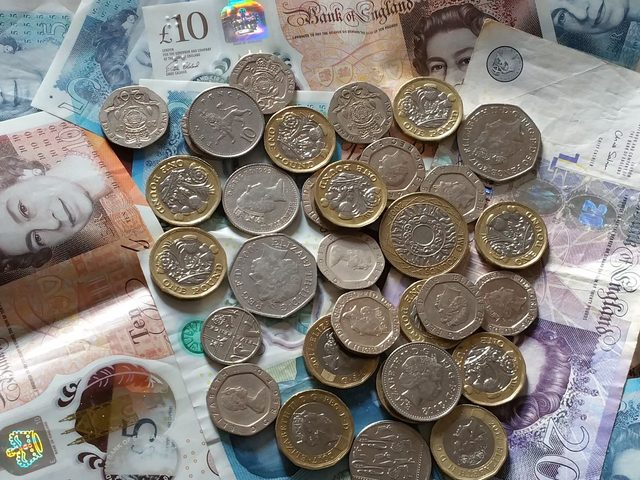
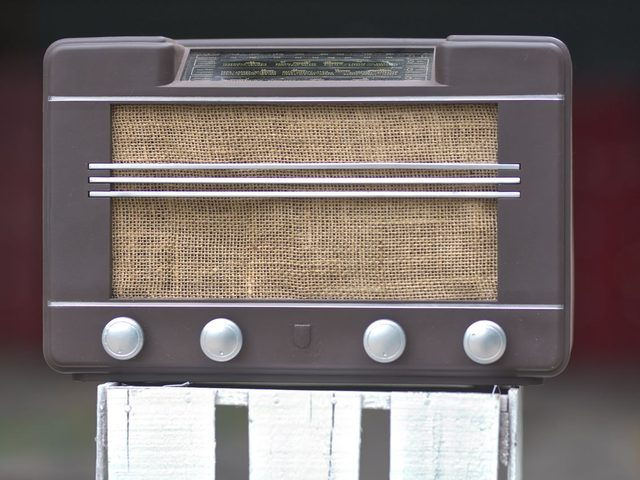
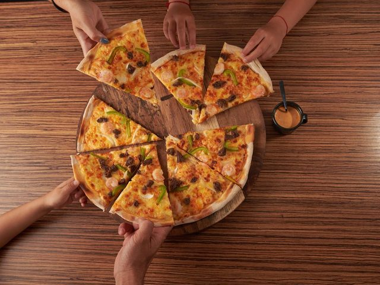

VOCABULARY · LALA WORD UNIT 11
More Light, Fewer Stars．一字多義（十一）
star 是星星，也是「明星」；light 是燈，也是「輕的」「淡的」。這個單元有 5 個主題單字、18 個更多單字，最後整理使役動詞 let／have／make。
共 23 個單字．點 🔊 聽發音

1starn. / v.
星星；恆星；明星；星形；（等級的）星；主演
star - starred - starred - starring
- 1n.星星；恆星We can see many stars tonight.今晚可以看到很多星星。
- 2n.明星 movie star 電影明星；rock star 搖滾明星She wants to be a movie star.她想當電影明星。
- 3n.星形Draw a star on the card.在卡片上畫一顆星星。
- 4n.（等級的）星We stayed at a five-star hotel.我們住五星級飯店。
- 5v.主演Who stars in this movie?這部電影是誰主演的？

2lightn. / adj. / v.
燈；光線；明亮的；淺色的；少量的；輕的；輕鬆的；點燃；照亮
light - lighter - lightest；light - lit（lighted） - lit（lighted） - lighting
- 1n.燈Please turn off the light.請關燈。
- 2n.光線Plants need light to grow.植物需要光才能生長。
- 3adj.明亮的It's still light outside at seven in summer.夏天七點外面還很亮。
- 4adj.淺色的；少量的 a light meal 清淡的一餐She is wearing a light blue shirt.她穿著淺藍色襯衫。
- 5adj.輕的；輕鬆的This bag is very light.這個包包很輕。
- 6v.點燃；照亮 light up 照亮Dad lit the candles on the cake.爸爸點了蛋糕上的蠟燭。

3hardadj. / adv.
困難的；堅硬的；嚴厲的；努力地；猛烈地；用力地
hard - harder - hardest
- 1adj.困難的The math test was very hard.數學考試很難。
- 2adj.堅硬的The bread is too hard to eat.麵包硬得吃不下。
- 3adj.嚴厲的 be hard on 對…嚴厲Don't be so hard on yourself.別對自己那麼嚴格。
- 4adv.努力地She studies hard every day.她每天都很用功。
- 5adv.猛烈地；用力地It is raining hard.雨下得很大。

4clearadj. / v.
晴朗的；清澈的；清楚的；明白的；清理；收拾；使（頭腦）清醒
clear - clearer - clearest；clear - cleared - cleared - clearing
- 1adj.晴朗的；清澈的The sky is clear today.今天天空很晴朗。
- 2adj.清楚的；明白的 It is clear that… 很明顯…Is that clear?這樣清楚嗎？
- 3v.清理；收拾 clear one's throat 清喉嚨Please clear the table after dinner.晚餐後請收拾餐桌。
- 4v.使（頭腦）清醒 clear one's head 讓頭腦清醒A walk helps me clear my head.散步幫助我讓頭腦清醒。

5shinev.
（陽光、月光）照耀；發亮；表現出色；擦亮
shine - shone - shone - shining；（擦亮）shine - shined - shined
- 1v.（陽光、月光）照耀 rise and shine 起床囉The sun is shining.陽光普照。
- 2v.發亮Her eyes shone with joy.她的眼睛因為開心而發亮。
- 3v.表現出色He really shines at basketball.他打籃球表現很出色。
- 4v.擦亮Dad shined his shoes.爸爸把鞋子擦亮。

6blowv.
吹；使驚嘆（blow away）；爆炸（blow up）
blow - blew - blown - blowing
- 1v.吹 blow out 吹熄；blow bubbles 吹泡泡；blow a kiss 送飛吻The wind blew my hat off.風把我的帽子吹走了。
- 2v.使驚嘆（blow away） blow + 人 + away 讓人驚豔The show blew me away.這場表演讓我驚嘆不已。
- 3v.爆炸（blow up） blow up 爆炸The old building was blown up.那棟舊大樓被炸毀了。

7duckn. / v.
鴨子；鴨肉；迅速低頭；躲避
duck - ducked - ducked - ducking
- 1n.鴨子The ducks are swimming in the pond.鴨子在池塘裡游泳。
- 2n.鴨肉Have you tried Peking duck?你吃過北京烤鴨嗎？
- 3v.迅速低頭Duck! The ball is coming!低頭！球飛過來了！
- 4v.躲避 duck behind / under 躲到…後面／下面The cat ducked under the bed.貓躲到床底下。

8gardenn. / v.
花園；菜園；從事園藝
garden - gardened - gardened - gardening
- 1n.花園；菜園Grandma grows roses in her garden.奶奶在花園種玫瑰。
- 2v.從事園藝My aunt loves gardening.我阿姨很喜歡園藝。

9giantadj. / n.
巨大的；巨人；巨頭；偉人
複數 giants
- 1adj.巨大的We saw a giant panda at the zoo.我們在動物園看到大貓熊。
- 2n.巨人The giant lived in a castle.巨人住在城堡裡。
- 3n.巨頭；偉人This company is a giant in the car business.這家公司是汽車業的巨頭。
10mustaux. / n.
必須；一定要；一定（推測）；必需品；必做的事
must 沒有過去式（用 had to）
- 1aux.必須；一定要 must not 不可以You must wear a helmet.你一定要戴安全帽。
- 2aux.一定（推測）You must be tired after the long trip.長途旅行後你一定很累。
- 3n.必需品；必做的事 a must-see 必看；a must-have 必備This museum is a must-see.這間博物館是必看的。

11newsn.
消息；新聞
news 不可數（a piece of news）
- 1n.消息 No news is good news. 沒消息就是好消息I have some good news for you.我有好消息要告訴你。
- 2n.新聞 on the news 在新聞上Dad watches the news every evening.爸爸每天晚上看新聞。

12pickv. / n.
挑選；接人；撿起（pick up）；摘（花、果）；挖；剔；選擇；工具
pick - picked - picked - picking
- 1v.挑選Pick a card, any card.隨便挑一張牌。
- 2v.接人；撿起（pick up） pick up 接人；撿起Mom will pick me up at five.媽媽五點會來接我。
- 3v.摘（花、果）We picked strawberries in Dahu.我們在大湖採草莓。
- 4v.挖；剔Don't pick your nose!不要挖鼻孔！
- 5n.選擇；工具 toothpick 牙籤；guitar pick 吉他彈片Take your pick.你隨便挑。

13poundn. / v.
英鎊；磅（重量單位）；連續敲打；（心）怦怦跳
pound - pounded - pounded - pounding
- 1n.英鎊The book costs ten pounds.這本書要十英鎊。
- 2n.磅（重量單位）The baby weighs seven pounds.寶寶重七磅。
- 3v.連續敲打；（心）怦怦跳My heart was pounding before the race.比賽前我的心怦怦跳。

14prettyadj. / adv.
漂亮的；相當；很
pretty - prettier - prettiest
- 1adj.漂亮的What a pretty dress!好漂亮的洋裝！
- 2adv.相當；很 pretty much 差不多The test was pretty easy.考試相當簡單。

15radion.
收音機；廣播；無線電通訊
複數 radios
- 1n.收音機Can you turn on the radio?你可以打開收音機嗎？
- 2n.廣播 listen to the radio 聽廣播I heard the song on the radio.我在廣播上聽到這首歌。
- 3n.無線電通訊The pilots talk by radio.飛行員用無線電通話。

16reachv.
抵達；達到（年紀、溫度）；伸手搆到；幫助；聯絡上
reach - reached - reached - reaching
- 1v.抵達We reached the top of the mountain at noon.我們中午到達山頂。
- 2v.達到（年紀、溫度）The temperature reached 38°C today.今天氣溫達到三十八度。
- 3v.伸手搆到；幫助 reach out to 伸出援手I can't reach the top shelf.我搆不到最上面那層架子。
- 4v.聯絡上You can reach me by phone.你可以打電話聯絡我。

17sharev. / n.
分享；共用；分攤；分配；股票
share - shared - shared - sharing
- 1v.分享；共用 share + 物 + with + 人Let's share this pizza.我們一起分這個披薩吧。
- 2v.分攤；分配We shared the work.我們分攤工作。
- 3n.股票He bought some shares of the company.他買了這家公司的一些股票。

18sharpadj.
鋒利的；嚴厲的；尖銳的（言語）；劇烈的；突然的；清楚的；明顯的；敏銳的；聰明的
sharp - sharper - sharpest
- 1adj.鋒利的Be careful. The knife is sharp.小心，刀子很利。
- 2adj.嚴厲的；尖銳的（言語）She gave me a sharp look.她狠狠地瞪了我一眼。
- 3adj.劇烈的；突然的 a sharp turn 急轉彎I felt a sharp pain in my leg.我的腿一陣劇痛。
- 4adj.清楚的；明顯的This photo is very sharp.這張照片很清楚。
- 5adj.敏銳的；聰明的 have a sharp eye for 對…有敏銳的眼光Grandpa still has a sharp mind.爺爺的頭腦還很靈光。
19slowadj. / v. / adv.
慢的；遲鈍的；（生意）冷清的；減速；慢慢地
slow - slower - slowest
- 1adj.慢的My watch is five minutes slow.我的錶慢了五分鐘。
- 2adj.遲鈍的He is a little slow at math.他數學反應有點慢。
- 3adj.（生意）冷清的Business is slow on rainy days.下雨天生意很冷清。
- 4v.減速 slow down 減速Slow down! You're driving too fast.慢一點！你開太快了。
- 5adv.慢慢地Go slow, please.請慢慢來。
20spacen. / v.
空間；空位；太空；隔開；留空
space - spaced - spaced - spacing
- 1n.空間There isn't enough space for a sofa.沒有足夠的空間放沙發。
- 2n.空位Is there a parking space?有停車位嗎？
- 3n.太空Astronauts live in space for months.太空人在太空住好幾個月。
- 4v.隔開；留空Space the chairs evenly.把椅子平均排開。

21trainn. / v.
火車；（禮服的）拖尾；訓練
train - trained - trained - training
- 1n.火車 take a train 搭火車；get on / off the train 上／下火車Let's take the train to Hualien.我們搭火車去花蓮吧。
- 2n.（禮服的）拖尾The bride's dress has a long train.新娘的禮服有長長的拖尾。
- 3v.訓練 train + 人／動物 + to V 訓練…做He trains his dog to sit.他訓練他的狗坐下。

22treatv. / n.
對待；看待；治療；請客；款待；請客；好東西
treat - treated - treated - treating
- 1v.對待Don't treat me like a baby.別把我當小孩子。
- 2v.看待She treated it as a joke.她把它當成玩笑。
- 3v.治療The doctor treated his cut.醫生處理了他的傷口。
- 4v.請客；款待 trick or treat 不給糖就搗蛋Let me treat you to lunch.我請你吃午餐。
- 5n.請客；好東西This is my treat.這次我請客。

23welladv. / adj. / int. / n.
好地；健康的；嗯；好吧；井
well - better - best
- 1adv.好地 as well 也She sings very well.她唱歌很好聽。
- 2adj.健康的 get well soon 早日康復I don't feel well today.我今天不太舒服。
- 3int.嗯；好吧Well, let me think.嗯，讓我想想。
- 4n.井The village gets water from a well.這個村子從井裡取水。
FOCUS
易混淆字：使役動詞 let／have／make
| 單字 | 句型 | 例句 |
|---|---|---|
| let | 允許：let + 受詞 + 原形動詞 | Mom let me play games for an hour. |
| have | 要求、安排：have + 人 + 原形動詞；have + 物 + p.p.（讓東西被處理） | I had my hair cut. |
| make | 強迫、使得：make + 受詞 + 原形動詞／形容詞 | The sad movie made me cry. |
三個都是「受詞 + 原形動詞」，不加 to。
FOCUS
一字多義：最常見 vs. 容易忽略的意思
| 單字 | 最常見的意思 | 容易忽略的意思 |
|---|---|---|
| light | 燈；光 | 輕的；淺色的；點燃 |
| duck | 鴨子 | 迅速低頭；躲避 |
| pound | 英鎊 | 磅；（心）怦怦跳 |
| pretty | 漂亮的 | 相當（pretty easy） |
| share | 分享 | 股票 |
| train | 火車 | 訓練；禮服拖尾 |
| treat | 對待 | 請客；治療 |
| well | 好地 | 健康的；井 |
FOCUS
常用片語
| 片語 | 意思 | 例句 |
|---|---|---|
| pick up | 接人；撿起 | I'll pick you up at six. |
| slow down | 減速 | Slow down, please. |
| blow out | 吹熄 | Blow out the candles! |
| be hard on | 對…嚴厲 | Don't be so hard on him. |
| get well soon | 早日康復 | Get well soon! |
| This is my treat. | 這次我請客 | Put your money away. This is my treat. |